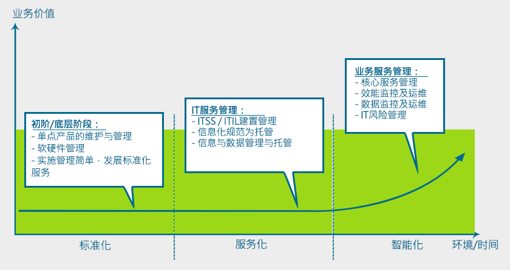
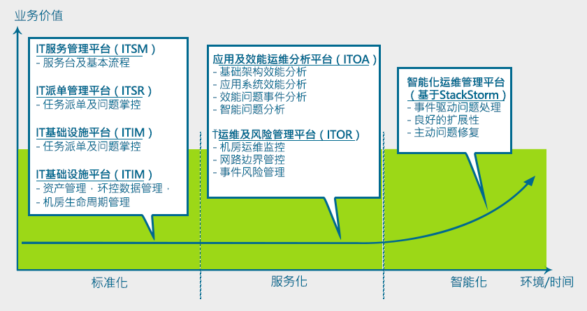

纬创软件IT运维管理服务打破过去的运维服务由单纯IT设备软硬件产的支持服务(MA服务即维保服务)或是单一解决硬件或系统性问题的处理，在过去传统的运维服务并不能解决企业的信息化需求，因此更需要的是一个通过日常例行而又主动的IT运维管理系统状况运行监测、IT资产配置变更、系统升级及优化、系统架构改良和问题改善、系统高可用性建设、容灾系统的切换保障等一系列主动性维护的运维服务。
纬创软件具有多年大型客户与专业软件开发的实力，因此比单一的系统集成服务提供商更理解软硬件整合、软硬件效能、运维数据分析等能力，可以从不同的面向提供IT运维服务，无论从基础IT服务到高阶系统运维服务，纬创软件都能提供一站式的服务。
服务内容
纬创软件提供企业在不同阶段所需要的IT服务，与客户共同成长。

依照企业在不同阶段，纬创软件也提供相对应的运维软件方案。

服务项目
- 基础设施和基础管理服务
- 硬件基础管理服务
- 网络系统管理服务
- 存储系统管理服务
- 操作系统管理服务
- 数据库管理服务
- 虚拟化及云端服务
- 应用维护管理服务
- 应用开发管理服务
- 业务优化与战略规画服务
- 企业安全管理
- 灾难辈分与恢复服务
- 项目实施：Transition & Transformation(转换与转型)
- 客户服务管理
- 服务水平管理
- 系统监控/报表
- 信息技术基础架构库(ITIL)运营管理(事件、变更、问题等)
服务优势
- 熟悉市场最先进管理监控工具
- 具有运维管理平台自主研发订制的能力
- 专注软件及系统维运服务
- 完善的服务和交付体系
- 一站式服务：包括咨询服务、设计使用者整体IT架构、业务软件开发、系统运维服务
- 具ITSS运维服务技术标准资质
- 服务客户横跨不同产业经验
成功案例
纬创软件运维服务具有两岸制造业、金融业、教育行业等领域的客户成功的服务经验，服务内容包括：机房托管与运维服务、一线网络运维服务、运维软件开发、软件运维、IT硬件及架构服务规划等。
代表客戶
世界知名化学公司、大陆前10大汽车集团、某国际保险集团、台湾某国际集团、中国地质大学等。